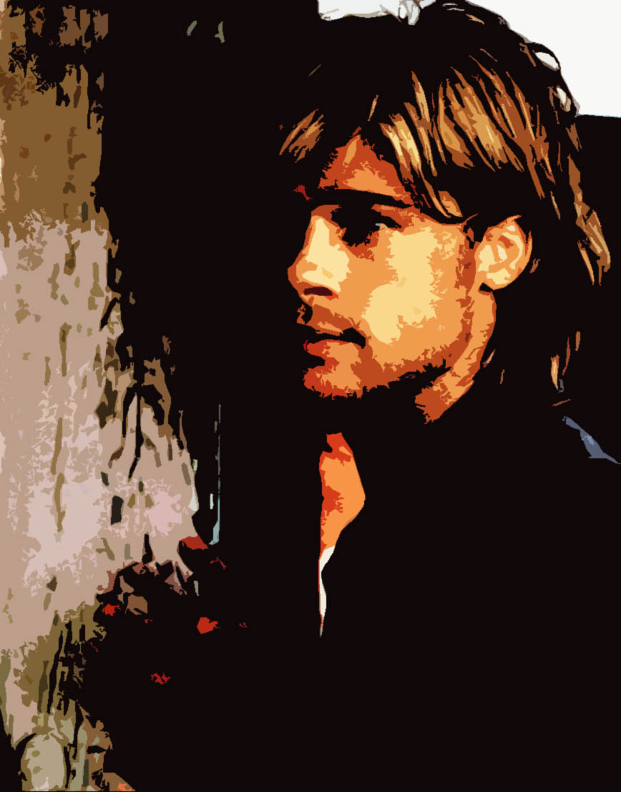
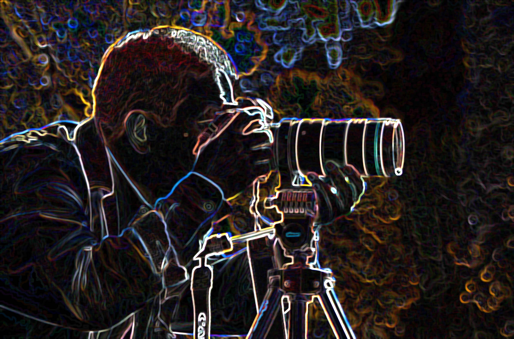
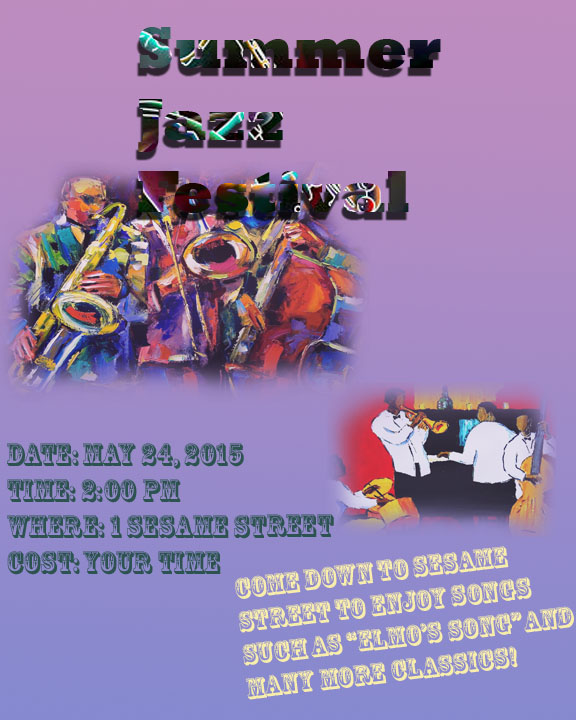
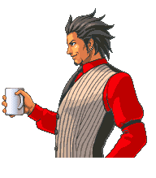
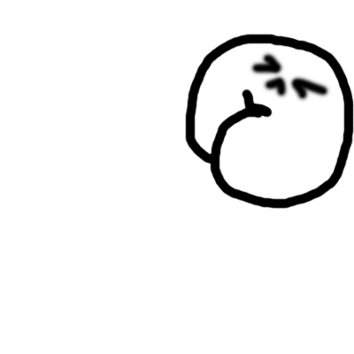
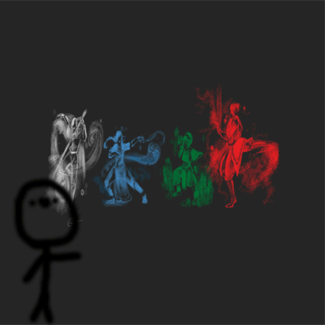

Editted Brad Pitt

I chose this assignmnet because it's Brad Pitt.
Photographer

I chose this assignment because it looks really cool in my opinion.
Poster

I chose this assignment because it was one of the first photoshop assignments that I made with my own hands.
Animated Gif

This is the first gif I have ever made from a sprite sheet or at all and it's from one of my favorite game series, "Phoenix Wright".
Original Gif

This is the first gif I have ever made completely on my own from scratch on photoshop. It's a butt barfing rainbows.
Gif: FIIIYAHHH

This is the second gif I have ever made completely on my own on photoshop. It's a firebender from the show Avatar The Last Airbender.
Flash: Ball
Flash: Shape Tween
This is the first flash animation I have ever done. It's a bouncing ball that says FML cause I had to do it over again.
Flash: Ball
This is the first flash animation I have ever done. It's a bouncing ball that says FML cause I had to do it over again.